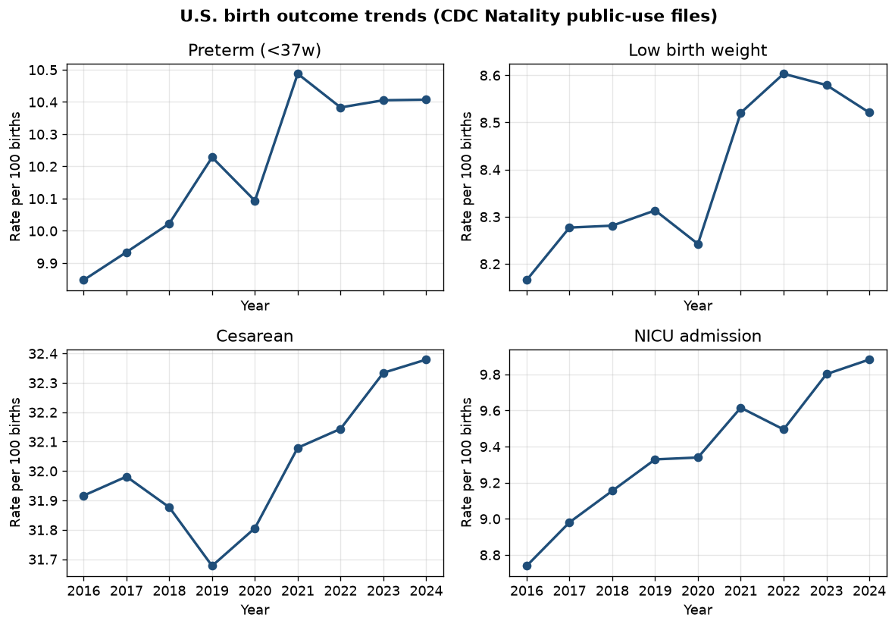
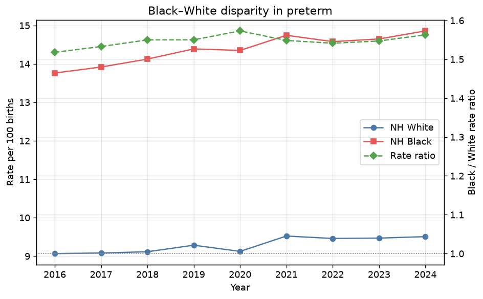
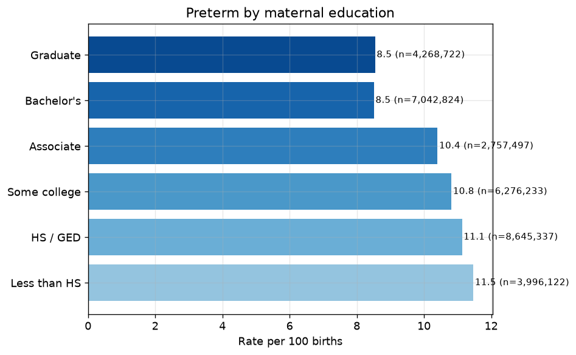
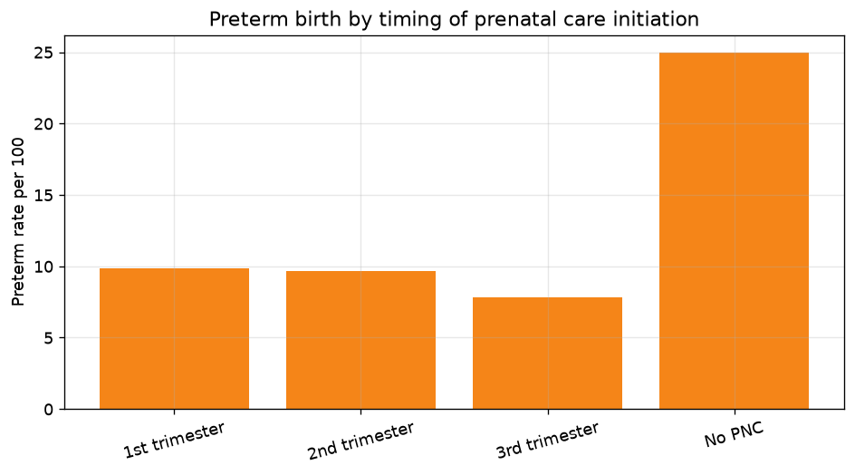
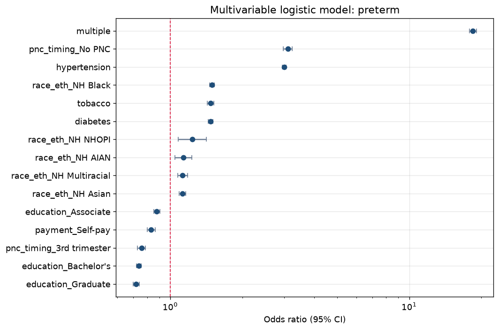

Key findings at a glance
Headline quantities from the analysis-ready pipeline (complete-case rates per 100 births unless noted).





Methods summary
We analyze official CDC / NCHS Natality U.S. public-use microdata
(not territory files) for years with the 2003 revised certificate fully in effect.
Fixed-width records are parsed using positions from the NCHS User Guides
(src/natality/layouts.py). Outcomes and covariates are constructed with
explicit missing/“not stated” rules (src/natality/variables.py).
Outcomes
- Preterm birth (<37 weeks, obstetric estimate preferred)
- Low birth weight (<2500 g) and very low birth weight (<1500 g)
- Cesarean delivery (total; low-risk nulliparous term singleton proxy)
- NICU admission; low 5-minute Apgar (<7)
- Neonatal antibiotics; maternal infections present/treated
Analysis
- Descriptive year trends and stratified rates (race/ethnicity, education, prenatal care, payment, clinical factors)
- Black–White rate ratios and absolute differences by year
- Multivariable logistic regression with complete-case analysis; ORs and 95% CIs saved under
results/models/
Full methods: research paper · variable dictionary · data provenance.
Main results tables
Yearly trends (excerpt)
| year | n_births | preterm_rate | lbw_rate | cesarean_rate | nicu_rate | low_apgar5_rate |
|---|---|---|---|---|---|---|
| 2016 | 3945875 | 9.847197952730061 | 8.165690141745596 | 31.916267855222824 | 8.739217866209444 | 2.0192587111290026 |
| 2017 | 3855500 | 9.933862670758298 | 8.27704517951729 | 31.98098589045529 | 8.980345102942108 | 2.012524317546542 |
| 2018 | 3791712 | 10.022603685997458 | 8.281082564836174 | 31.876581724081888 | 9.154775285496097 | 1.9964424608554192 |
| 2019 | 3747540 | 10.228232154043086 | 8.313451955622414 | 31.677132731633613 | 9.3289681166109 | 2.0678962159602103 |
| 2020 | 3613647 | 10.093324350092725 | 8.242348373016643 | 31.805661541324113 | 9.339335429449978 | 2.1023559726363015 |
| 2021 | 3664292 | 10.48750443831426 | 8.520495028491153 | 32.079113978501674 | 9.615074490690098 | 2.182946540577053 |
| 2022 | 3667758 | 10.383055027070299 | 8.603218539345464 | 32.143429151583796 | 9.494780848067116 | 2.1908952043154097 |
| 2023 | 3596017 | 10.405315337252583 | 8.579300003172746 | 32.334204190131004 | 9.800965765821987 | 2.2446893149035407 |
| 2024 | 3628934 | 10.407129083727114 | 8.52098806902815 | 32.37914296988612 | 9.881636596105833 | 2.266793656666712 |
Black–White preterm gap by year
| year | white_rate | black_rate | rate_ratio | rate_diff_pp | white_n | black_n |
|---|---|---|---|---|---|---|
| 2016 | 9.065912675869507 | 13.761502127160481 | 1.517938967555809 | 4.695589451290974 | 2080662 | 562722 |
| 2017 | 9.080284792601551 | 13.917757658193771 | 1.5327446193685141 | 4.83747286559222 | 2013395 | 564624 |
| 2018 | 9.113171040151755 | 14.124197294712392 | 1.5498663673141366 | 5.011026254560637 | 1976875 | 556244 |
| 2019 | 9.283260417876548 | 14.389270294625376 | 1.5500233373736139 | 5.1060098767488284 | 1937175 | 552634 |
| 2020 | 9.122401971517752 | 14.349626430705843 | 1.573009660778893 | 5.227224459188092 | 1863336 | 534439 |
| 2021 | 9.52160730643351 | 14.743568887213181 | 1.548432781643003 | 5.221961580779672 | 1909331 | 522499 |
| 2022 | 9.45876777302094 | 14.57871665571266 | 1.5412913188645196 | 5.11994888269172 | 1861881 | 515793 |
| 2023 | 9.46838153162179 | 14.648030516057846 | 1.547046923187184 | 5.1796489844360565 | 1806634 | 495739 |
| 2024 | 9.505900956195532 | 14.857628701685169 | 1.5629900595589115 | 5.351727745489637 | 1803606 | 477519 |
Education gradient — preterm
| level | n | events | rate_per_100 |
|---|---|---|---|
| Less than HS | 3996122 | 458223 | 11.466691957853138 |
| HS / GED | 8645337 | 962277 | 11.13058981969124 |
| Some college | 6276233 | 678645 | 10.812935083831336 |
| Associate | 2757497 | 286839 | 10.402150936156957 |
| Bachelor's | 7042824 | 599281 | 8.509100894754718 |
| Graduate | 4268722 | 364657 | 8.542533339018094 |
| Missing | 498174 | 63980 | 12.842902279123358 |
Prenatal care gradient — preterm
| level | n | events | rate_per_100 |
|---|---|---|---|
| 1st trimester | 25263841 | 2492341 | 9.8652497060918 |
| 2nd trimester | 5363779 | 517516 | 9.648346809217903 |
| 3rd trimester | 1480045 | 115500 | 7.803816775841275 |
| No PNC | 633524 | 158092 | 24.95438215442509 |
| Missing | 743720 | 130453 | 17.54060667993331 |
Logistic model coefficients (preterm)
| term | or | ci_low | ci_high | pvalue |
|---|---|---|---|---|
| const | 0.18319384285589163 | 0.17571989564304738 | 0.1909856817151881 | 0.0 |
| maternal_age | 1.0169131208020064 | 1.0155631453276652 | 1.0182648907819771 | 3.475265905380662e-135 |
| year_c | 1.0032060730561678 | 1.0004391710654854 | 1.0059806274327696 | 0.023113474394255863 |
| tobacco | 1.4742604574093432 | 1.430284535865435 | 1.5195884747266044 | 2.8569661226882513e-139 |
| obesity | 1.0153002709725705 | 0.9993622807870648 | 1.031492442785737 | 0.05997975657159842 |
| diabetes | 1.4727319336171718 | 1.4387032180003345 | 1.5075655084099975 | 4.3554978663672045e-231 |
| hypertension | 2.995692694351295 | 2.938719745669368 | 3.053770177375532 | 0.0 |
| multiple | 18.451895564690226 | 17.825659667082565 | 19.10013184863852 | 0.0 |
| race_eth_Hispanic | 1.0969261501657819 | 1.0762992829606013 | 1.117948323451191 | 1.277670065930206e-21 |
| race_eth_NH AIAN | 1.134487846972185 | 1.0478560497811915 | 1.228281952655942 | 0.0018496404087551491 |
| race_eth_NH Asian | 1.1240640494673841 | 1.0892612276888218 | 1.1599788509740052 | 3.1428964162714795e-13 |
| race_eth_NH Black | 1.4936593076895015 | 1.46276147474016 | 1.5252097939233678 | 9.6727448009108e-310 |
| race_eth_NH Multiracial | 1.1249881685730931 | 1.0732781817999961 | 1.1791895157198722 | 9.316528760390463e-07 |
| race_eth_NH NHOPI | 1.2375963738124511 | 1.0812325685799011 | 1.4165729270303076 | 0.00197956846995132 |
| education_Associate | 0.8775470784840054 | 0.8527353968285726 | 0.9030806951603837 | 4.402596207844744e-19 |
| education_Bachelor's | 0.7380636037599883 | 0.7204759192752369 | 0.7560806247947334 | 1.652472370802525e-134 |
| education_Graduate | 0.719446169293765 | 0.699048599803487 | 0.740438920351144 | 1.6563932556464594e-111 |
| education_Less than HS | 1.081879423956919 | 1.0560128218482663 | 1.1083796179034777 | 1.840804009833029e-10 |
| education_Some college | 0.9440322216402811 | 0.9243563445796659 | 0.9641269200140994 | 8.347825054898836e-08 |
| pnc_timing_2nd trimester | 0.9012901605832392 | 0.8835979908535543 | 0.9193365783680172 | 9.168916512537413e-25 |
| pnc_timing_3rd trimester | 0.7573099163326055 | 0.7295339924638801 | 0.786143367273038 | 3.7197260114318556e-48 |
| pnc_timing_No PNC | 3.10110348338152 | 2.96878939578063 | 3.2393145934530962 | 0.0 |
| payment_Medicaid | 1.090196892171569 | 1.0706039206680655 | 1.1101484318858985 | 1.0284250842244869e-20 |
| payment_Other | 1.0441437579605444 | 1.0038723856424236 | 1.0860306577616197 | 0.031353594690605675 |
| payment_Self-pay | 0.8319292401594963 | 0.7990809627379892 | 0.8661278304777882 | 3.4780927206355504e-19 |
What the data show
The quantitative pattern that organizes this project is the persistence of the non-Hispanic Black–White preterm disparity across the full analysis window, alongside clear socioeconomic and care-timing gradients. Overall national rates move, but the relative Black–White gap in preterm birth remains large.
Multivariable models that simultaneously adjust for education, prenatal care initiation, tobacco, obesity, diabetes, hypertension, plurality, payment source, maternal age, and year still leave a substantial association between NH Black identity and preterm birth (adjusted OR 1.49, 95% CI 1.46–1.53). That is the falsifiable core of the thesis: if compositional differences in the measured covariates fully explained the disparity, the adjusted association would attenuate to the null — it does not in these public-use specifications.
Education and prenatal-care timing both show monotonic gradients in unadjusted preterm rates (absolute spans of roughly 2.96 and 15.09 percentage points respectively). These gradients matter clinically and for targeting, but they do not erase the race/ethnicity association in the joint model.
Limitations
- No geography in public-use files after 2004. State/county identifiers are suppressed; we cannot analyze place, segregation, or hospital markets.
- Cross-sectional birth certificates: associations are not causal effects of race, education, or prenatal care.
- Self-reported and facility-reported items vary in completeness; “not stated” codes are excluded from complete-case rates/models.
- Low-risk cesarean is an NTSV-style proxy without full presentation/prior obstetric detail available on all records.
- For computational feasibility on multi-million-row files, logistic models may use documented outcome-stratified samples; descriptives use the full analysis-ready extract.
Reproducibility
Repository: github.com/Kesmitij/cdc-natality-birth-outcomes
py -3.12 -m pip install -r requirements.txt py -3.12 scripts/download_natality.py --years 2016-2024 --guides py -3.12 scripts/process_all_years.py --years 2016-2024 --cleanup py -3.12 scripts/run_analysis.py py -3.12 scripts/build_site.py py -3.12 scripts/build_paper.py py -3.12 -m pytest -q
Raw zips are gitignored (~230 MB each). Checksums live in data/raw/download_manifest.json.
Derived tables and model JSON under results/ are committed so the site and paper rebuild without multi-GB downloads.